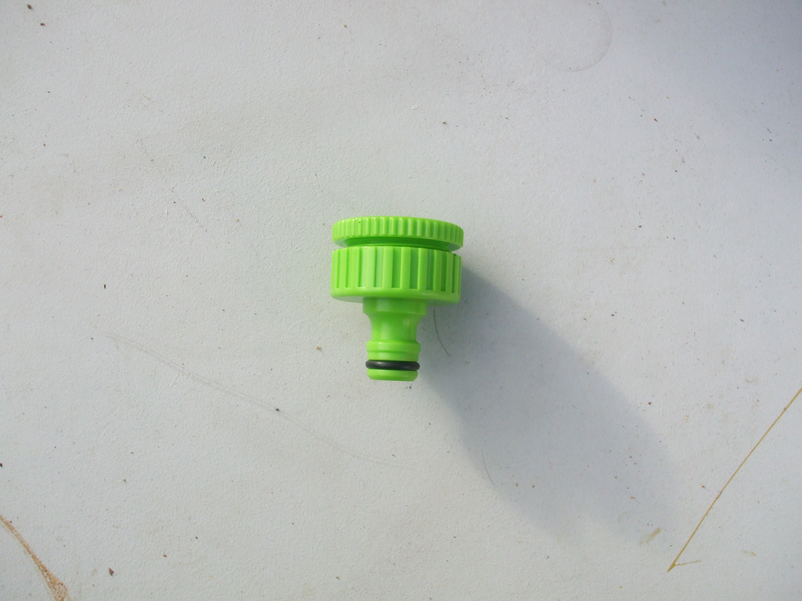
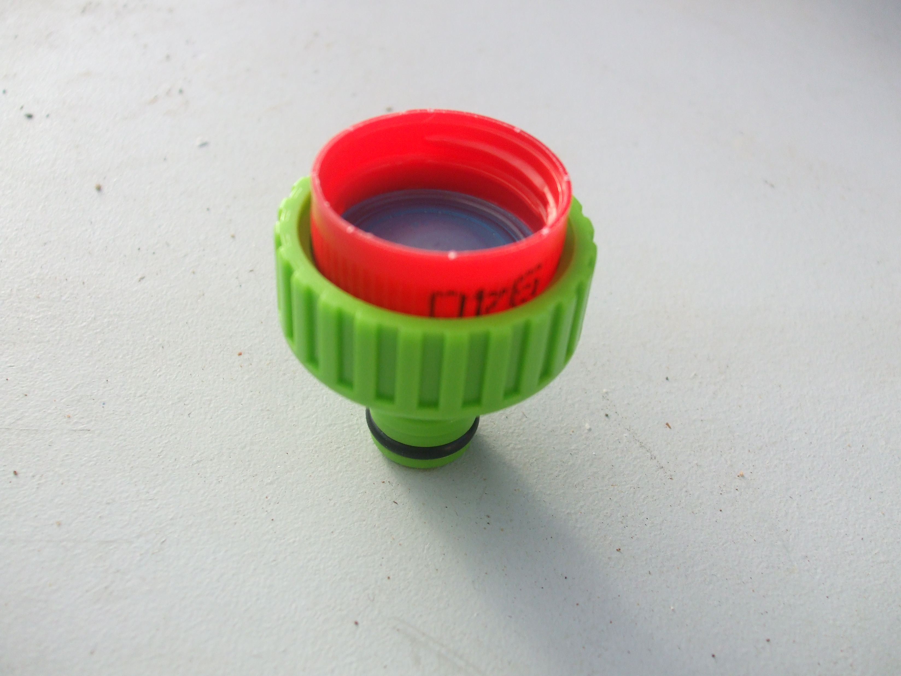
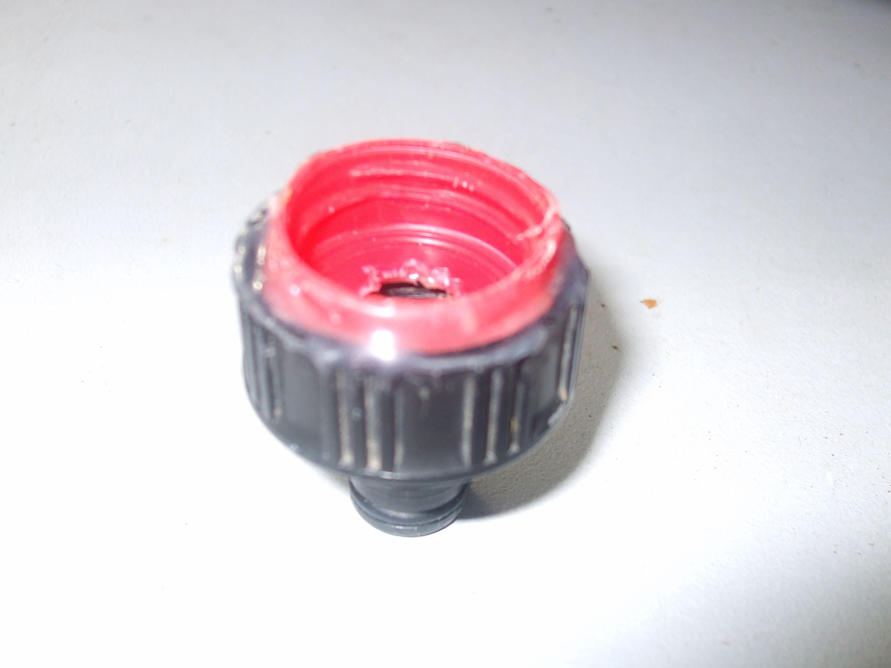
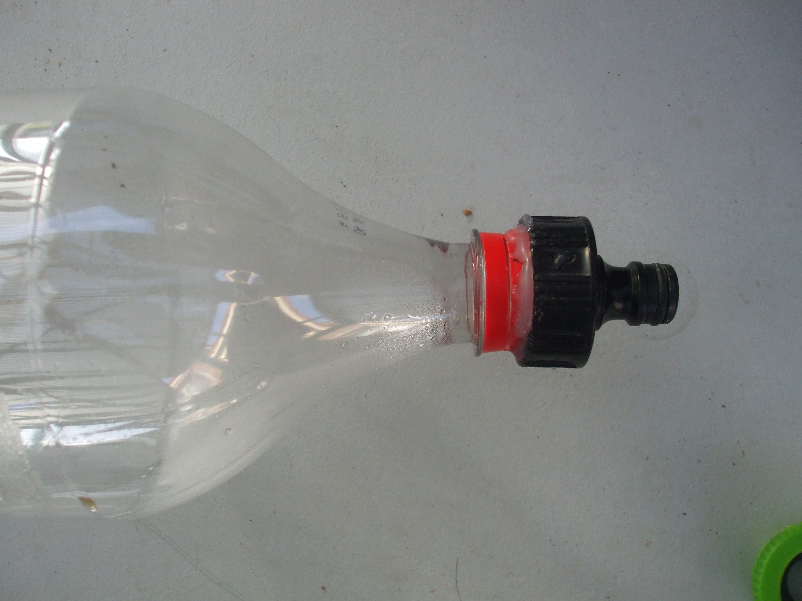
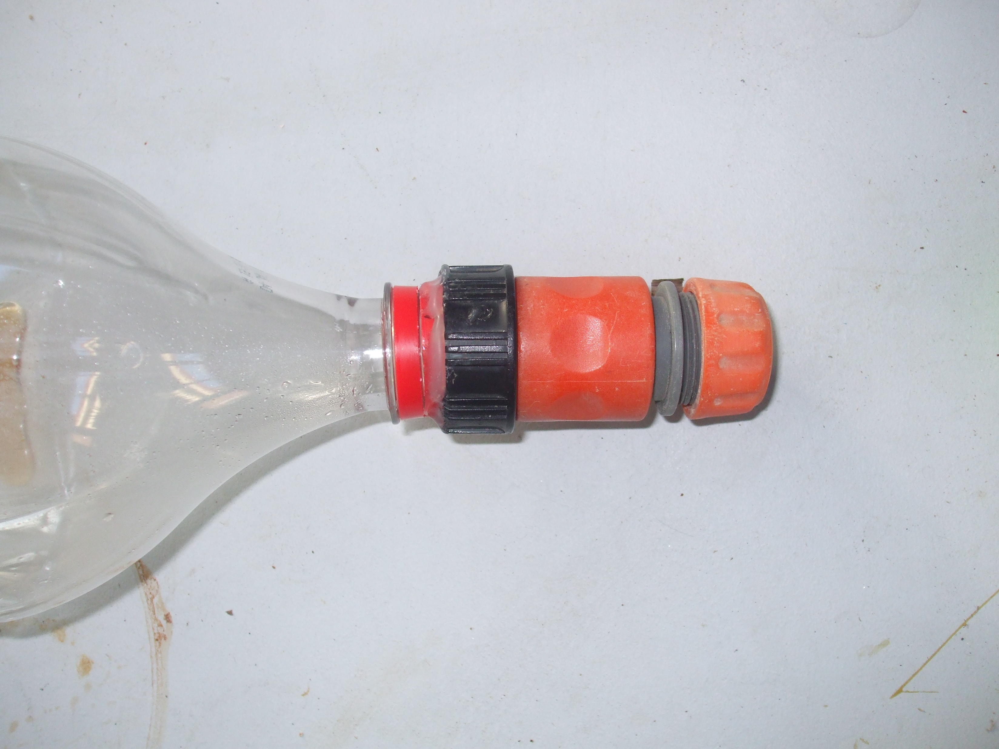

Universal Tap Connector
Here, i'm gonna explain how to make a quick and easy connector.
Brief intro.
Water rocket is filling a PET (think coke bottle) with water (1/3),
sealing it, pumping it full of air, and letting it shoot upwards
through the force of the exiting water and air.
The easiest way to make a launcher, is through gardena type garden hose
connections. However, these don't normally fit too well onto the PET
bottle. However, as i am going to show below, sometimes they do....
Materials
Universal Tap Adaptor
PET bottle lid.
Drill/screwdriver+hammer
hot glue gun (other glues may work)
Method
1) Take aprt the universal tap adaptor. It just unscrews. Don't bother
to remove any of the rubber.
2)Make a hole in the PET bottle lid, and the little blue thinng that
comes inside it.
3)Insert like this
4)Take out. Get your hot glue out, and run a bead of glue around the
PET lid, as low as possible. Quickly put in the bottom half of the
universal tap adapter before the glue dries.
5) Jam down hard. Once the glue has dried, you should end up with
something like this.
6) Seal around the edge with more hot glue if neccessary. This is not
desirable, it's just a patch.
7) How to use. Screw it on, use the gardena quick connect thingo.

{kind=link}
{kind=link}
{kind=link}
{kind=link}
{kind=link}
Notes**
If you wish to use a stronger glue, eg epoxy, it is best to score some fairly deep scratches into the PET bottle cap. Otherwise all it does is pull straight out.